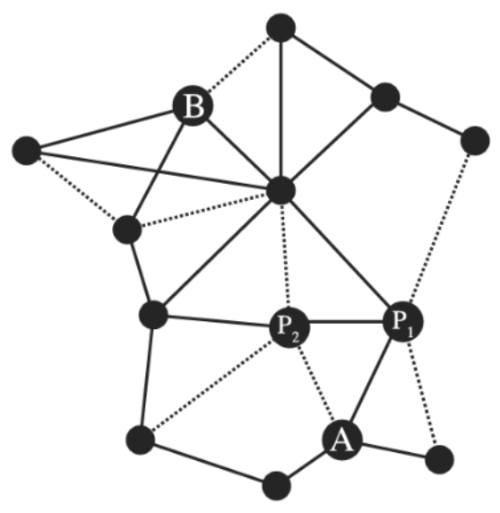
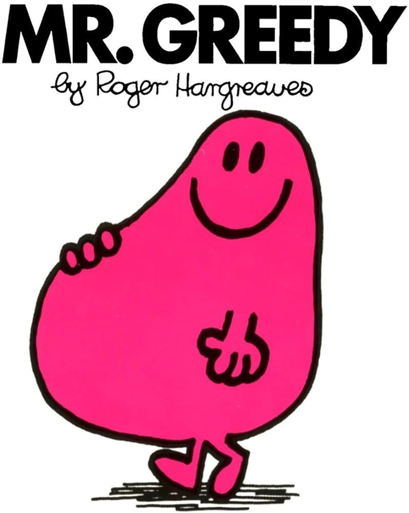
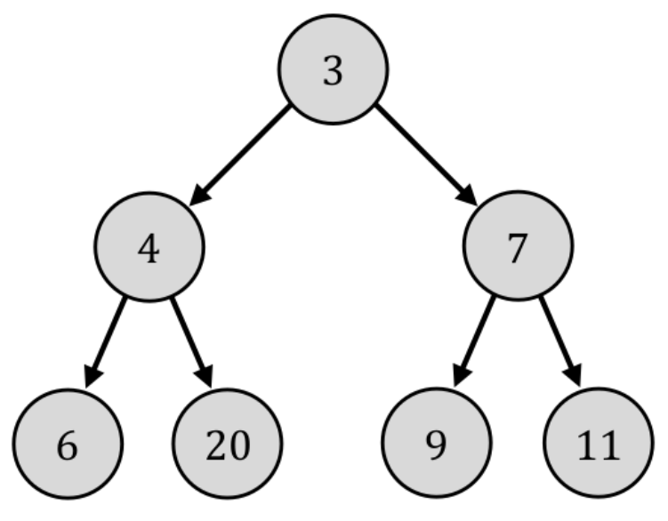
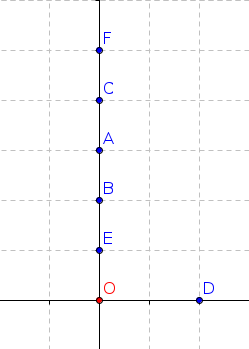
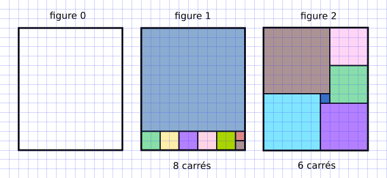
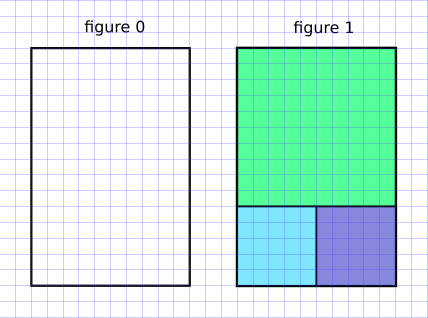
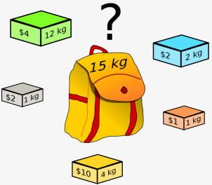

Algorithmes gloutons
Introduction
Optimiser un problème est une des problématiques courantes en informatique. Cela consiste à trouver une solution au problème en maximisant ou minimisant un certain critère.
Exemple
Prenons un exemple basé sur la carte des grands axes routiers de France présentée ci-dessous. Les autoroutes sont représentées en traits pleins et les autres routes moins rapides en traits pointillées.

On veut trouver le « meilleur chemin » entre les points \(A\) et \(B\). Ce meilleur chemin dépend du critère d’optimalité : veut-on le chemin :
- le plus court (en distance) ?
- le plus rapide (en temps) ?
La recherche de la solution optimale n’est pas une tache facile. Dans l'exemple précédent, une méthode pour trouver le chemin le plus court entre \(A\) et \(B\) consisterait à énumérer tous les chemins possibles pour ne garder que ceux qui partent de \(A\) et arrivent en \(B\). On trouve alors le chemin optimale en cherchant le plus court parmi ces derniers. En pratique les problèmes à optimiser sont complexes et l’énumération de toutes les combinaisons n’est pas envisageable par contrainte de temps ou de mémoire. Il faut donc trouver des astuces pour que cette optimisation soit réalisable concrètement. Les algorithmes gloutons, que nous présentons ici, représentent une possibilité dans de nombreuses situations.
Les algorithmes gloutons

On dit greedy algorithms en anglais, l'adjectif "greedy" signifiant avare/glouton.
Définition
Les algorithmes gloutons forment une catégorie d'algorithmes permettant de donner une solution à des problèmes d'optimisation qui visent à maximiser/minimiser une quantité (plus court chemin (GPS), plus petit temps d'exécution, meilleure organisation d'un emploi du temps, etc.) Le principe d'un algorithme glouton est le suivant :
- résoudre un problème étape par étape ;
- à chaque étape, faire le choix optimal de moindre coût (de meilleur gain).
Le choix effectué à chaque étape n'est jamais remis en cause, ce qui fait que cette stratégie permet d'aboutir rapidement à une solution au problème de départ. C'est en ce sens que l'adjectif greedy (glouton/avare) caractérise ces algorithmes : ils terminent rapidement (glouton) sans fournir beaucoup d'efforts (avare).
La question (presque philosophique) est : Lorsqu'on fait à chaque étape le meilleur choix possible, est-ce que la solution finale à laquelle on arrive est la meilleure possible ? Formulé autrement : Est-ce que faire le meilleur choix à chaque étape nous assure le meilleur choix global ?
Exemples d'algorithmes gloutons
Une chenille vorace
Une chenille mangeuse de pucerons se déplace sur l’arbre ci-dessous, du haut vers le bas uniquement. Les nombres sur l’arbre indiquent le nombre de pucerons présents à chaque nœud. La chenille mange tous les pucerons qu’elle rencontre le long de son chemin. Le but de la chenille est évidemment de manger un maximum de pucerons.

Le nombre maximum de pucerons qu’elle peut manger en un passage correspond à ce que l’on appelle l’optimum global du problème.Exercice 1 ⭐
- Que vaut l’optimum global sur l’arbre ci-dessus ?
Cependant la chenille est trop gloutonne (autrement dit vorace) pour planifier son trajet et choisit systématiquement, à chaque étape, le nœud présentant le plus grand nombre de pucerons. Ce nombre est ce que l’on appelle l’optimum local pour cette étape.
Exercice 2 ⭐
- Combien de pucerons aura mangé cette chenille gloutonne en un passage sur l’arbre ci-dessus au total ?
- Cela correspond-t-il à l’optimum global ?
Remarque
Le comportement de notre chenille vorace correspond donc au principe d'un algorithme glouton. elle détermine une solution de son problème (qui est de manger le plus possible de pucerons) en effectuant une série de choix optimaux locaux (en choisissant systématiquement le nœud présentant le plus grand nombre de pucerons). Au cours de la construction de cette solution, la chenille résout une partie du problème puis se focalise ensuite sur le sous-problème restant à résoudre. Les choix ne sont donc jamais remis en cause au cours de cette construction.
Propriété
Un algorithme glouton ne fournit pas toujours l’optimum global du problème.
Un plus court chemin ?
- Vous partez du point \(\operatorname{O}\).
- Vous devez avoir atteint le plus rapidement possible tous les points \(\operatorname{A}\), \(\operatorname{B}\), \(\operatorname{C}\), \(\operatorname{D}\), \(\operatorname{E}\), \(\operatorname{F}\).
- L'ordre de parcours des points n'est pas important.

La philosophie de l'algorithme glouton implique qu'à chaque étape, vous allez vous diriger vers le point le plus proche.Remplir un rectangle avec des carrés
(d'après S.Tummarello et E.Buonocore) On considère un rectangle de dimension 11 sur 13 (figure 0). On veut remplir ce rectangle avec le minimum de carrés.

Un algorithme glouton va chercher à positionner d'abord le plus grand carré possible (figure 1).
C'est une stratégie efficace (8 carrés nécessaires), mais qui n'est pas optimale : la figure 2 présente un pavage avec seulement 6 carrés.Encore une fois, la solution gloutonne n'est pas la solution optimale.
Est-ce qu'un algorithme glouton va toujours passer à côté de la solution optimale ?
Non ! Il arrive aussi qu'il donne la solution optimale. Changeons le rectangle initial en un rectangle de 10 sur 15 :

Dans cette situation, l'algorithme glouton nous amène à la solution optimale.
Conclusion
Un algorithme glouton est une méthode rapide et souvent efficace, mais qui ne garantit pas l'optimalité de la solution trouvée. La succession de meilleurs choix LOCAUX va nous amener à une bonne solution GLOBALE, mais ne nous garantit pas d'arriver à la solution optimale.
Le problème du rendu de monnaie
Nous allons travailler avec des pièces (ou billets) de \(1, 2, 5, 10, 20, 50, 100, 200\) euros.
L'objectif est de créer un programme renvoyant, pour une somme somme_a_rendre entrée en paramètre, la combinaison utilisant un minimum de pièces ou de billets pour fabriquer la somme somme_a_rendre.
Par exemple, lorsque vous payez avec \(20\) € un objet coûtant \(11\) €, vous préférez qu'on vous rende vos \(9\) € de monnaie par \(9 = 5 + 2 + 2\) plutôt que par \(9=2+2+2+1+1+1\)
La résolution de ce problème peut se faire de manière gloutonne : à chaque étape, vous allez essayer de rendre la plus grosse pièce (ou billet) possible.
Vers l'algorithme de rendu de monnaie
On veut coder la fonction rendu qui prend pour paramètre un entier positif somme_a_rendre et qui renvoie la liste des pièces à donner.
Les pieces disponibles (en quantité illimitée) sont stockées dans une variable pieces = [200, 100, 50, 20, 10, 5, 2, 1].
Utilisation :
>>> rendu(13)
[10, 2, 1]
>>> rendu(58)
[50, 5, 2, 1]
Exercice 5 ⭐
Compléter l'un des codes à trous ci-dessous :
Code à trous ⭐⭐⭐⭐
def rendu(somme_a_rendre):
pieces = [200, 100, 50, 20, 10, 5, 2, 1]
solution = []
...
...
...
...
...
...
...
return solution
Code à trous ⭐⭐⭐
def rendu(somme_a_rendre):
pieces = [200, 100, 50, 20, 10, 5, 2, 1]
solution = []
i = ...
while ... > ...:
if ... <= ...:
....append(...)
... = ... - ...
else:
... += ...
return solution
Code à trous ⭐⭐
def rendu(somme_a_rendre):
pieces = [200, 100, 50, 20, 10, 5, 2, 1]
solution = []
i = 0
while ... > ...:
if pieces[i] <= ...:
solution.append(...)
somme_a_rendre = ... - ...
else:
... += ...
return solution
Code à trous ⭐
def rendu(somme_a_rendre):
pieces = [200, 100, 50, 20, 10, 5, 2, 1]
solution = []
i = 0
while somme_a_rendre > ...:
if pieces[i] <= somme_a_rendre:
solution.append(...)
somme_a_rendre = ... - ...
else:
i += 1
return solution
Une solution optimale ?
Imaginons qu'il n'y ait plus de pièces de \(10\) et \(5\) euros.
Exercice 6 ⭐
Faites fonctionner votre algorithme pour la somme de \(63\) euros.
Moralité
Lors d'un rendu de monnaie, l'algorithme glouton n'est optimal que sous certaines conditions, ce qui est un peu décevant. On peut montrer que l’algorithme glouton du rendu de monnaie renvoie une solution optimale pour le système monétaire \(\{1, 2, 5, 10, 20, 50, 100, 200\}\). Pour cette raison, un tel système de monnaie est qualifié de canonique. Il est difficile de caractériser mathématiquement si un système de monnaie est canonique ou pas.
Le problème du sac à dos

Knapsack Problem en anglais, souvent abrégé KP.
Le problème est celui-ci : vous disposez d'un sac d'une contenance limitée (sur le dessin ci-dessus, 15kg) dans lequel vous allez mettre des objets qui ont un certain poids et une certaine valeur. Vous souhaitez maximiser la valeur totale des objets que vous mettez dans votre sac. Evidemment, la somme de leur masse ne doit pas dépasser 15 kg.
Ce problème (de la catégorie des problème dits d'analyse combinatoire) malgré sa simplicité est un problème majeur d'optimisation.
Où en est-on de la recherche académique sur le problème du sac à dos ?
Actuellement :
- On sait trouver LA meilleure solution, mais en explorant toutes les combinaisons une par une. Cette méthode par force brute est inapplicable si beaucoup d'objets sont en jeu.
- On sait facilement trouver une bonne solution, mais pas forcément la meilleure, par exemple en adoptant une stratégie gloutonne.
- On ne sait pas trouver facilement (en temps polynomial) la meilleure solution. Si vous y arrivez, 1 Million de $ sont pour vous.
La situation
On considère un sac de \(10\) kg et les objets suivants :
| objet | \(\operatorname{A}\) | \(\operatorname{B}\) | \(\operatorname{C}\) | \(\operatorname{D}\) | \(\operatorname{E}\) | \(\operatorname{F}\) |
|---|---|---|---|---|---|---|
| \(\operatorname{masse}\) (en kg) | \(4\) | \(3\) | \(1\) | \(2\) | \(6\) | \(7\) |
| \(\operatorname{valeur}\) (en €) | \(4800\) | \(2700\) | \(200\) | \(2600\) | \(7200\) | \(9100\) |
Quels objets faut-il prendre ?
⇒ Stratégies gloutonnes
Il y a plusieurs choix possibles :
- Stratégie 1 : prendre toujours l'objet de plus grande \(\operatorname{valeur}\) n'excédant pas la capacité restante (il faut trier préalablement par valeur décroissante).
- Stratégie 2 : prendre toujours l'objet de plus faible \(\operatorname{masse}\) (il faut trier préalablement par masse croissante).
- Stratégie 3 : prendre toujours l'objet de plus grand rapport \(\displaystyle\frac{\operatorname{valeur}}{\operatorname{masse}}\) (qu'on appelle taux de valeur) n'excédant pas la capacité restante (il faut trier préalablement par rapport \(\displaystyle\frac{\operatorname{valeur}}{\operatorname{masse}}\) décroissant).
Exercice 7 ⭐
Essayez d'appliquer les trois stratégies à notre exemple. Y a-t-il une stratégie meilleure qu'une autre ?
On constate donc que pour cet exemple, la stratégie n°3 est la meilleure. Mais on peut faire mieux ! En effet, le sac \(\{\operatorname{A}, \operatorname{E}\}\) fait \(10\) kg et possède une valeur de \(12000\) €. Il s'agit de la solution optimale de ce problème.
Moralité
On constate que la qualité de la solution dépend de la stratégie gloutonne utilisée. Selon les exemples, c'est l'une ou l'autre qui sera meilleure. Cependant, cette solution n'est pas forcément la solution optimale.
Implémentation en Python
Dans ce paragraphe, nous allons implémenter en Python la stratégie 3. Il faut donc commencer par trier nos objets.
Tri décroissant des objets selon leur taux de valeur
On considère la liste :
objets = [["A", 4, 4800], ["B", 3, 2700], ["C", 1, 200], ["D", 2, 2600], ["E", 6, 7200], ["F", 7, 9100]]
En s'inspirant du paragraphe sur la fonction Python sorted, on classe ces objets suivant leur taux de valeur.
objets = [["A", 4, 4800], ["B", 3, 2700], ["C", 1, 200], ["D", 2, 2600], ["E", 6, 7200], ["F", 7, 9100]]
def ratio(objet):
# renvoie le rapport prix/poids d'un objet
return objet[2] / objet[1]
objets_tries = sorted(objets, key=ratio, reverse=True)
>>> objets_tries
[['D', 2, 2600], ['F', 7, 9100], ['A', 4, 4800], ['E', 6, 7200], ['B', 3, 2700], ['C', 1, 200]]
Calcul de la solution par méthode gloutonne
objets = [["A", 4, 4800], ["B", 3, 2700], ["C", 1, 200], ["D", 2, 2600], ["E", 6, 7200], ["F", 7, 9100]]
def ratio(objet):
# renvoie le rapport prix/poids d'un objet
return objet[2] / objet[1]
objets_tries = sorted(objets, key=ratio, reverse=True)
poids_max = 10
poids_sac = 0
butin = []
for objet in objets_tries:
poids_objet = objet[1]
if poids_objet + poids_sac <= poids_max:
butin.append(objet[0])
poids_sac += poids_objet
>>> butin
['D', 'F', 'C']
On retrouve bien la combinaison établie dans le précédent exercice.
Pourquoi se contenter d'une solution non optimale ?
Comme nous venons de le voir dans les deux problèmes du rendu de monnaie et du sac à dos, la stratégie gloutonne ne donne pas forcément un résultat optimal. On peut alors se demander s'il n'est pas possible de trouver la meilleure solution, à coup sûr, pour résoudre un problème d'optimisation. Une telle approche existe, il s'agit de la stratégie de force brute (ou énumérative) qui consiste à passer en revue toutes les options possibles et retenir la meilleure.
Pourquoi n'utilise-t-on pas toujours la force brute ?
Le plus simple est de l'expliquer sur un exemple : prenons le problème du sac à dos.
Chaque objet est pris ou pas : il s'agit donc d'une donnée binaire.
Avec \(3\) objets, il y a donc \(2^3\) combinaisons d'objets possibles, c'est-à-dire \(8\), ce qui est tout à fait acceptable.
De manière générale, avec \(n\)
objets, il y aurait \(2^n\) combinaisons à énumérer et tester. On obtient une complexité dite exponentielle et c'est là le problème : avec \(80\) objets, on obtient \(2^{80}\) combinaisons à tester, c'est-à-dire environ \(10^{24}\) combinaisons, soit de l'ordre de grandeur du nombre d'étoiles dans l'Univers observable, ou de gouttes d'eau dans la mer, ou du nombre de grains de sables au Sahara...
(référence : https://fr.wikipedia.org/wiki/Ordres_de_grandeur_de_nombres).
La stratégie force brute est donc inapplicable si trop d'objets sont en jeu. Il en est de même pour les autres problèmes d'optimisation dès que le taille des données est trop importante.
Résumé
Résumé
Dans ce chapitre, j'ai appris :
- que les algorithmes gloutons fournissent une stratégie pour résoudre des problèmes d'optimisation : à chaque étape, faire le meilleur choix (local).
- que ces algorithmes donnent rapidement une solution satisfaisante à un problème mais pas nécessairement la solution optimale puisque les choix successifs ne sont jamais remis en cause.
- que la stratégie de force brute permettrait à coup sûr d'obtenir une solution optimale mais devient inapplicable dès que la taille des données est trop importante. C'est pourquoi une solution gloutonne est parfois privilégiée.